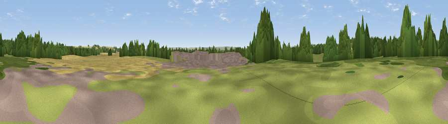

Lamp Hill
#41683 in England · top 51% of its area beats it · near WimpoleThe view, rendered

A 360° render of this exact spot computed from the terrain model, tree cover and land cover — summer colours, afternoon light, calibrated against photographs of famous viewpoints. Real trees, hedges and buildings will differ in detail.
The panorama
Grey silhouette: terrain skyline in each direction (720 bearings, Earth curvature and refraction included). Dashed green: skyline with trees (+15 m) and buildings (+8 m) as obstacles. Blue strip: how far the ground is visible on each bearing.
Where the view opens
Wedge length = distance to the farthest visible ground on that bearing (vegetation-aware). Rings at 10, 25 and 50 km.
What fills the view
42% grassland · 37% cropland · 18% woodland · 3% built-up
Angular shares of the visible panorama (visual magnitude), not map area. Landscape diversity 0.50 (0–1 Shannon).
Key numbers
More beautiful places nearby
The staircase of upgrades: each row has a higher view potential than everything closer. Driving times are estimates from straight-line distance, calibrated against real road routing — check an actual route before setting out.
| Place | Direction | Drive | Score |
|---|---|---|---|
| Viewpoint near Wimpole | N · 2 km | ~4 min | 40.3 |
| Viewpoint near Orwell | E · 2 km | ~6 min | 45.6 |
| Viewpoint near Harlton | E · 5 km | ~12 min | 49.6 |
| Viewpoint near Royston | S · 11 km | ~20 min | 56.6 |
| Viewpoint near Hexton | SW · 30 km | ~47 min | 65.4 |
| Viewpoint near Church End | SW · 45 km | ~65 min | 65.8 |
| Beacon Hill | SW · 51 km | ~72 min | 74.1 |
| Viewpoint near Halton | SW · 61 km | ~83 min | 74.3 |
52.13835, -0.04262 · source: osm peak · position refined by local search. Computed location — check access rights before visiting.